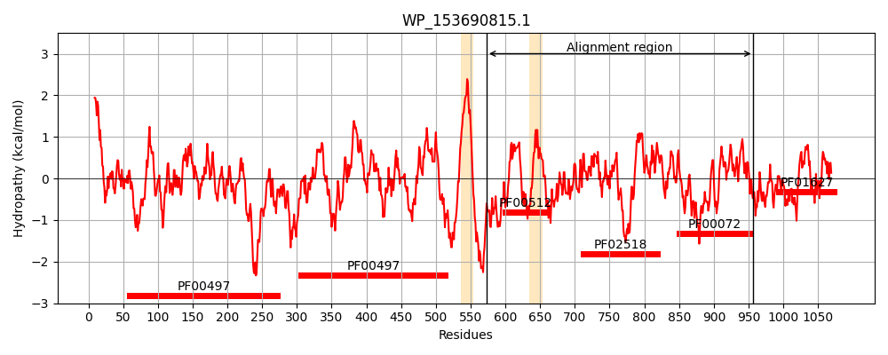
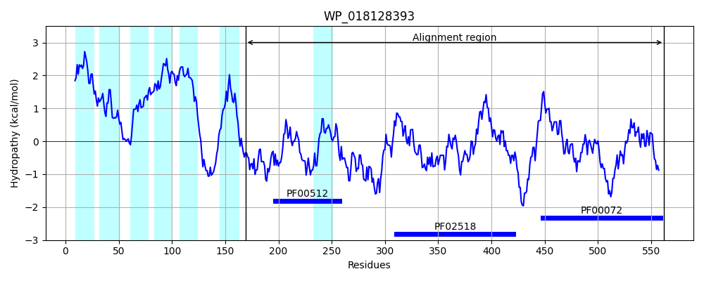
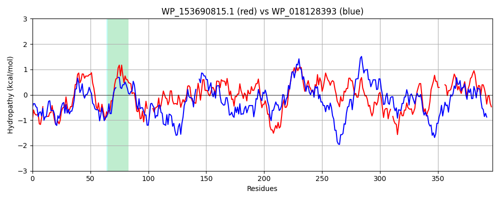

Hit Accession: WP_018128393
Hit TCID: 9.B.238.3.1
Hit Description: gnl|BL_ORD_ID|20890 gnl|TC-DB|WP_018128393.1|9.B.238.3.1 hybrid sensor histidine kinase/response regulator [Balneola vulgaris]
Mach Len: 397
e:0.000000
Query TMS Count : 2
Hit TMS Count: 7
TMS-Overlap Score: 1.150000
Predicted Substrates:None
BLAST Alignment:
Score: 454 , Bit scores: 179 bits, E-value: 1.2e-47, Alignment length: 397, Percentage identity: 32
Query: 573 LAQKEALSCA---LEREKDKAIQATKAKSRFLASMSHELRTPVSAIVGFLELLAKPELNGGQRKEAIELAGSTAQTLLGLIGNILDIDKIESGKYQITPQ----WSDVAQLVSQQCHTFDALAQQKGIVLHHHNALQEGIMLWLDPQALRQILNNLIGNALKFTAEGAIQVSCRLVQADETQGELTLIVSDSGCGISEAEQATLFHRYAQARQGRQQTGSGLGLVICKELVALMQGRLEMVSHPGVGTTFTITLPVKASHCALHAPQALPTRPQALPGLAILIADDHPTNRLLLKRQLSTIGYSVDEACD-GEEAENKLASKHYDLLITDLNMPRKDGLALAASLRRRYPGL----VIWGVTASALPQSREACLASGMNMCLFKPVSVQTLSHELSR 957
++ +E LS A L+ EK +A A KS+FLA++SHE+RTP++ IVG ELL + L+ QR+ LA S+ L LIG++LD +E K + ++ LV D+ ++ + + + + E ++ D LRQIL NL+ NA+KFT EG I + R + +E + + DSG GISE ++A LF ++ +A+ + G+GLGL IC+ L+ LM G + + S G G+TFTI +P +A + GL ILIA+D N+L+LK+ L + + E D GE+A + S +YD ++ D+ MP+ DG+ + + Y I VTA+ + G+ KP++ Q + LS+
Sbjct: 169 ISDREKLSKAVLDLKSEKIRAEAADDTKSQFLATISHEMRTPLNGIVGITELLEETNLSDEQRELVTNLAYSS-NMLNSLIGDVLDYTLLEDRKLVLQNNEIHIQKELKNLVDMFKPKIDSKNKRIELKFEYDSEIPEIVIG--DVTRLRQILVNLVNNAVKFTNEGYIHIKTRFIAEEEDIQRVRFTIEDSGIGISEQDKALLFTKFFRAKTNDKVEGTGLGLAICRGLIDLMNGAIYVDSKLGEGSTFTIEIPFRAYEDKSVQEVKDHKDKECFAGLKILIAEDVLVNQLVLKKMLEHLSVTDVEIVDNGEDAVERAISDNYDFVLMDIQMPKLDGMDASEKITEYYADKEHKPKIIAVTANVMKSDLARYAEVGIIDAATKPLNTQMIRDLLSK 562 | Protein Hydropathy Plots: |
|---|
|  |  |
Pairwise Alignment-Hydropathy Plot:
|
|---|
|  |